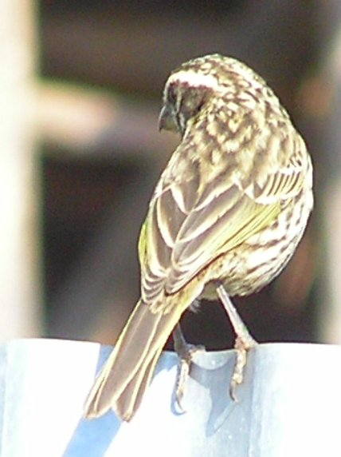
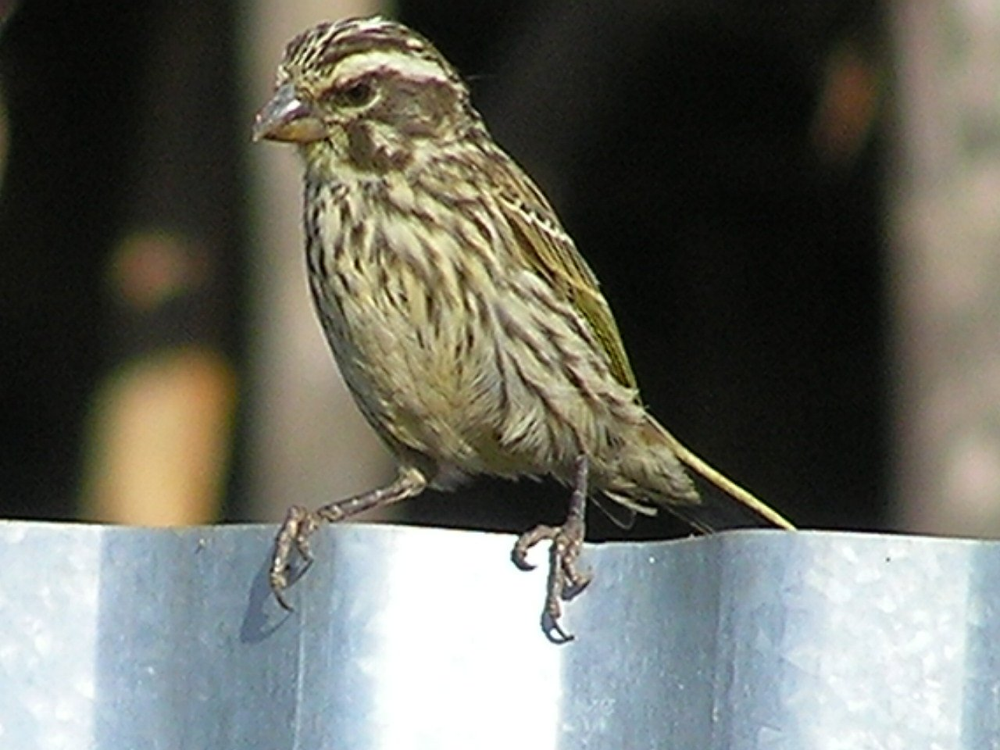
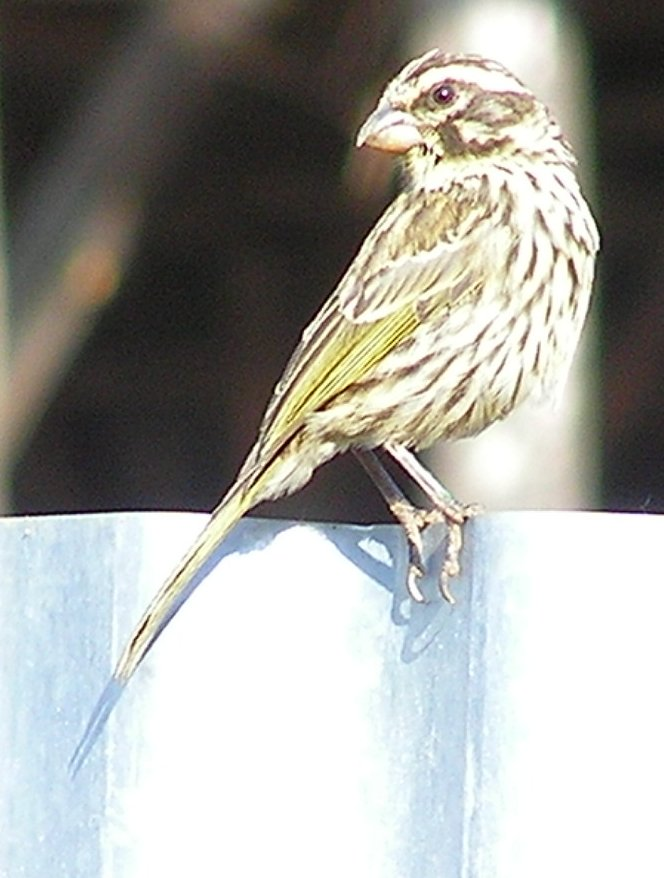
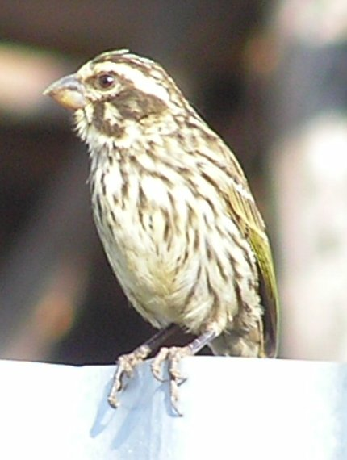

14-15cm.
|  |  |  |  |
Sparrow size, heavily streaked, heavy slightly crossed bill. It has an inconspicuous yellow wash on the primaries. The facial pattern is a good match for the streaky seed-eater. They were in a flock of about 60 birds which include brown backed seed-eaters.
The beak is a bit slender, and the face pattern wrong, and the voice wrong for non breeding bishops.
About 60 of these birds arrived on 22nd January in the garden and nearby buildings, announcing themselves by canary like twittering. Because of this, and the pink, slightly crossed, bill I am classifying them as Northern Grossbeak-Canary. The facial pattern and plumage is unlike any in 'Birds of Africa', but I speculate they are in eclipse or transition plumage.